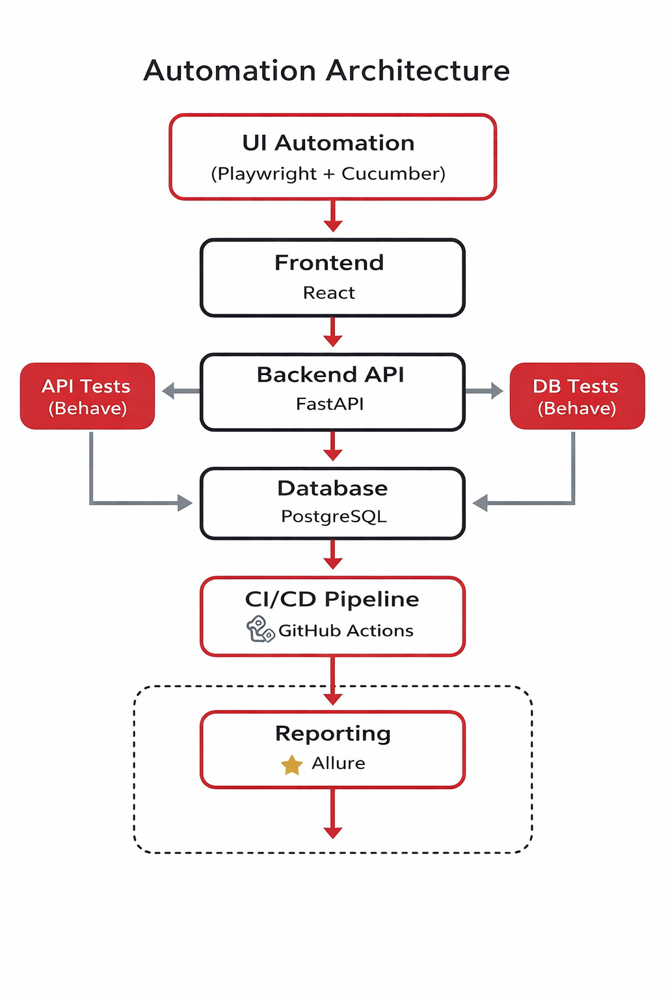
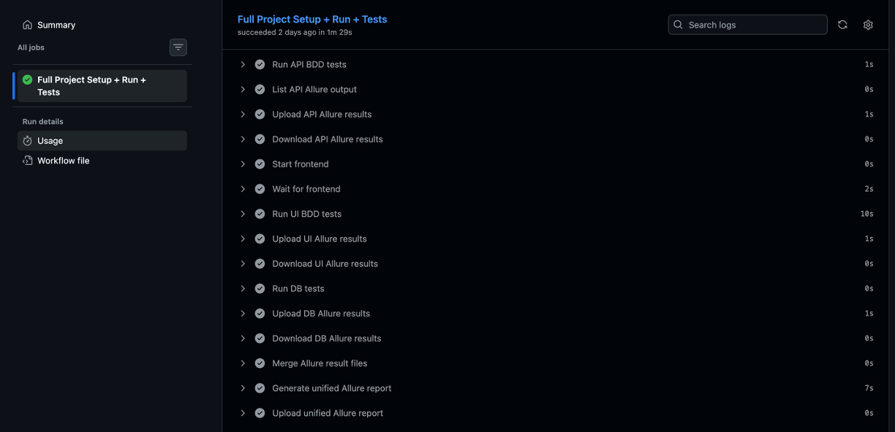
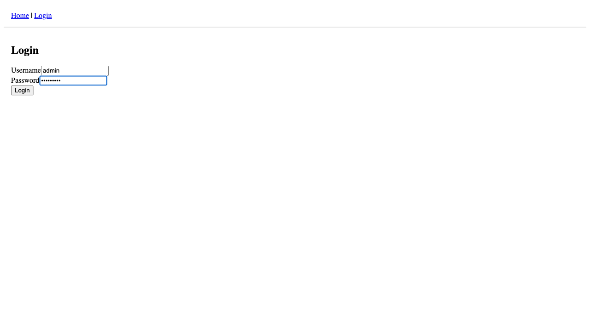
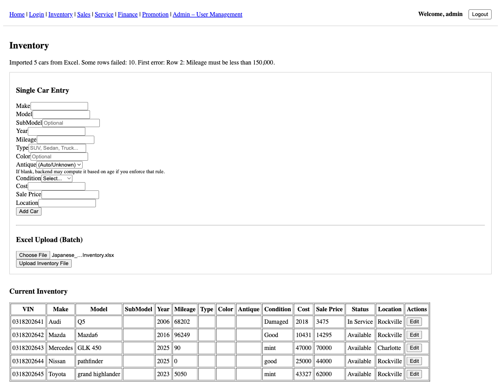

This project demonstrates a production-grade automation framework designed using modern Software Development Engineer in Test (SDET) practices. The framework validates UI, API, and database layers of a full stack application using Behavior Driven Development (BDD) and CI/CD pipelines.
The system under test consists of:
Automation tests validate system behavior across the entire application stack, from user interactions in the browser to data validation in the database.

UI BDD Tests (Playwright + Cucumber)
│
▼
React Frontend
│
▼
FastAPI Backend
│
▼
PostgreSQL Database
│
▼
Database Validation Tests

The CI pipeline automatically executes the automation suite through the following stages:
Environment Setup
│
▼
API BDD Tests
│
▼
UI BDD Tests
│
▼
Database Validation Tests
│
▼
Unified Allure Report
Scenario: Admin uploads inventory Excel file Given admin logs in When admin uploads inventory Excel file Then cars should be added to inventory And cars should exist in the database

Test results are aggregated into a unified Allure dashboard which provides:




View the complete project on GitHub:
https://github.com/kucukkal/UsedCarDealerProject
This portfolio project demonstrates real-world SDET capabilities including automation framework design, CI/CD integration, multi-layer testing strategy, and automated reporting systems used in modern engineering teams.